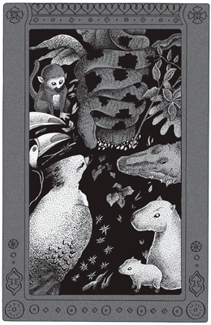
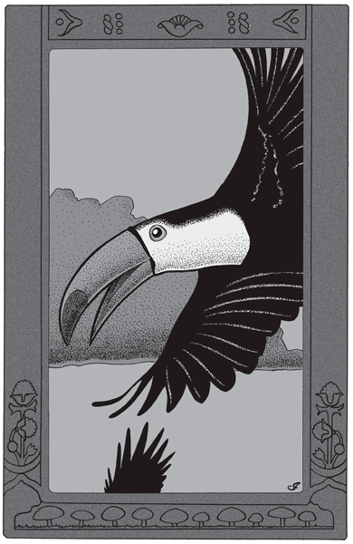
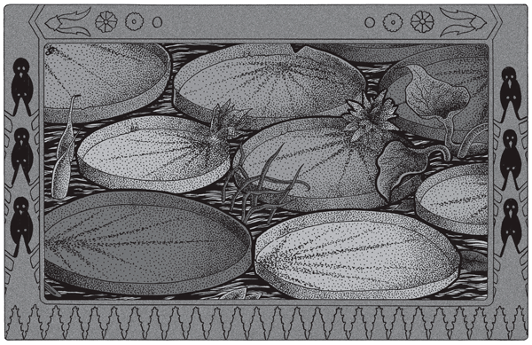
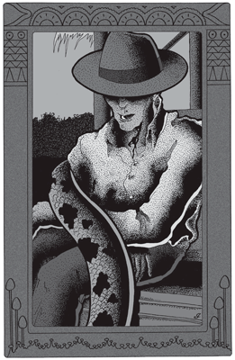
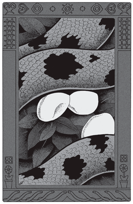

Cuando Anaconda, en complicidad con los elementos nativos del trópico, meditó y planeó la reconquista del río, acababa de cumplir treinta años.
Era entonces una joven serpiente de diez metros, en la plenitud de su vigor. No había en su vasto campo de caza tigre o ciervo capaz de sobrellevar con aliento un abrazo suyo. Bajo la contracción de sus músculos toda vida se escurría, adelgazada hasta la muerte. Ante el balanceo de las pajas que delataban el paso de la gran boa con hambre, el juncal, todo alrededor, empenachábase de altas orejas aterradas. Y cuando, al caer el crepúsculo en las horas mansas, Anaconda bañaba en el río de fuego sus diez metros de oscuro terciopelo, el silencio circundábala como un halo.
Pero siempre la presencia de Anaconda desalojaba ante sí la vida, como un gas mortífero. Su expresión y sus movimientos de paz, insensibles para el hombre, denunciábanla desde lejos a los animales.
De este modo:
–Buen día –decía Anaconda a los yacarés, a su paso por los fangales.
–Buen día –respondían mansamente las bestias al sol, rompiendo dificultosamente con sus párpados globosos el barro que los soldaba.
–¡Hoy hará mucho calor! –saludábanla los monos trepados, al reconocer en la flexión de los arbustos a la gran serpiente en desliz.
–Sí, mucho calor… –respondía Anaconda, arrastrando consigo la cháchara y las cabezas torcidas de los monos, tranquilos sólo a medias.
Porque mono y serpiente, pájaro y culebra, ratón y víbora, son conjunciones fatales que apenas el pavor de los grandes huracanes y la extenuación de las interminables sequías logran retardar. Sólo la adaptación común a un mismo medio, vivido y propagado desde el remoto inmemorial de la especie, puede sobreponerse en los grandes cataclismos a esta fatalidad del hambre. Así, ante una gran sequía, las angustias del flamenco, de las tortugas, de las ratas y de las anacondas formarán un solo desolado lamento por una gota de agua.
Cuando encontramos a nuestra Anaconda, la selva hallábase próxima a precipitar en su miseria esta sombría fraternidad.
Desde dos meses atrás, no tronaba la lluvia sobre las polvorientas hojas. El rocío mismo, vida y consuelo de la flora abrasada, había desaparecido. Noche a noche, de un crepúsculo a otro, el país continuaba desecándose como si todo él fuera un horno. De lo que había sido cauce de umbríos arroyos sólo quedaban piedras lisas y quemantes; y los esteros densísimos de agua negra y camalotes hallábanse convertidos en páramos de arcilla surcada de rastros durísimos que entrecubría una red de filamentos deshilachados como estopa, y que era cuanto quedaba de la gran flora acuática. A toda la vera del bosque, los cactus, enhiestos como candelabros, aparecían ahora doblados a tierra, con sus brazos caídos hacia la extrema sequedad del suelo, tan duro que resonaba al menor choque.
Los días, unos tras otros, deslizábanse ahumados por la bruma de las lejanas quemazones, bajo el fuego de un cielo blanco hasta enceguecer, y a través del cual se movía un sol amarillo y sin rayos, que al llegar la tarde comenzaba a caer envuelto en vapores como una enorme masa asfixiada.
Por las particularidades de su vida vagabunda, Anaconda, de haberlo querido, no hubiera sentido mayormente los efectos de la sequía. Más allá de la laguna y sus bañados enjutos, hacia el sol naciente, estaba el gran río natal, el Paranahyba refrescante, que podía alcanzar en media jornada.
Pero ya no iba el boa a su río. Antes, hasta donde alcanzaba la memoria de sus antepasados, el río había sido suyo. Aguas, cachoeras, lobos, tormentas y soledad, todo le pertenecía.
Ahora, no. Un hombre, primero, con su miserable ansia de ver, tocar y cortar, había emergido tras del cabo de arena con su larga piragua. Luego otros hombres, con otros más, cada vez más frecuentes. Y todos ellos sucios de olor, sucios de machetes y quemazones incesantes. Y siempre remontando el río, desde el Sur…
A muchas jornadas de allí, el Paranahyba cobraba otro nombre, ella lo sabía bien.
Pero más allá todavía, hacia ese abismo incomprensible del agua bajando siempre, ¿no habría un término, una inmensa restinga de través que contuviera las aguas eternamente en descenso?
De allí, sin duda, llegaban los hombres, y las alzaprimas, y las mulas sueltas que infectan la selva. ¡Si ella pudiera cerrar el Paranahyba, devolverle su salvaje silencio, para reencontrar el deleite de antaño, cuando cruzaba el río silbando en las noches oscuras, con la cabeza a tres metros del agua humeante…!
Sí; crear una barrera que cegara el río… y bruscamente pensó en los camalotes.
La vida de Anaconda era breve aún; pero ella sabía de dos o tres crecidas que habían precipitado en el Paraná millones de troncos desarraigados, y plantas acuáticas y espumosas y fango. ¿Adónde había ido a pudrirse todo eso? ¿Qué cementerio vegetal sería capaz de contener el desagüe de todos los camalotes que un desborde sin precedentes vaciará en la sima de ese abismo desconocido?
Ella recordaba bien: crecida de 1883; inundación de 1894… Y con los once años transcurridos sin grandes lluvias, el régimen tropical debía sentir, como ella en las fauces, sed de diluvio.
Su sensibilidad ofídica a la atmósfera rizábale las escamas de esperanza. Sentía el diluvio inminente. Y como otro Pedro el Ermitaño, Anaconda lanzose a predicar la cruzada a lo largo de los riachos y fuentes fluviales.
La sequía de su hábitat no era, como bien se comprende, general a la vasta cuenca. De modo que tras largas jornadas, sus narices se expandieron ante la densa humedad de los esteros, plenos de victorias regias, y al vaho de formol de las pequeñas hormigas que amasaban sus túneles sobre ellas.
Muy poco costó a Anaconda convencer a los animales. El hombre ha sido, es y será el más cruel enemigo de la selva.
–…Cegando, pues, el río –concluyó Anaconda después de exponer largamente su plan–, los hombres no podrán más llegar hasta aquí.
–¿Pero las lluvias necesarias? –objetaron las ratas de agua, que no podían ocultar sus dudas–. ¡No sabemos si van a venir!
–¡Vendrán! Y antes de lo que imaginan. ¡Yo lo sé!
 |
–¡Vendrán! Y antes de lo que imaginan. ¡Yo lo sé! |
–Ella lo sabe –confirmaron las víboras–. Ella ha vivido entre los hombres. Ella los conoce. –Sí, los conozco. Y sé que un solo camalote, uno solo, arrastra, a la deriva de una gran creciente, la tumba de un hombre.
–¡Ya lo creo! –sonrieron suavemente las víboras–. Tal vez de dos…
–O de cinco… –bostezó un viejo tigre desde el fondo de sus ijares–. Pero dime –se desperezó directamente hacia Anaconda–: ¿estás segura de que los camalotes alcanzarán a cegar el río? Lo pregunto por preguntar.
–Claro que no alcanzarán los de aquí, ni todos los que puedan desprenderse en doscientas leguas a la redonda… Pero te confieso que acabas de hacer la única pregunta capaz de inquietarme. ¡No, hermanos! Todos los camalotes de la cuenca del Paranahyba y del río Grande, con todos sus afluentes, no alcanzarían a formar una barra de diez leguas de largo a través del río. Si no contara más que con ellos, hace tiempo que me hubiera tendido a los pies del primer caipira con machete… Pero tengo grandes esperanzas de que las lluvias sean generales e inunden también la cuenca del Paraguay. Ustedes no lo conocen… Es un gran río. Si llueve allá, como indefectiblemente lloverá aquí, nuestra victoria es segura. Hermanos: ¡hay allá esteros de camalotes que no alcanzaríamos a recorrer nunca, sumando nuestras vidas!
–Muy bien… –asintieron los yacarés con pesada modorra–. Es aquel un hermoso país… ¿Pero cómo sabremos si ha llovido también allá? Nosotros tenemos las patitas débiles…
–No, pobrecitos… –sonrió Anaconda, cambiando una irónica mirada con los carpinchos, sentados a diez prudenciales metros–. No los haremos ir tan lejos… Yo creo que un pájaro cualquiera puede venir desde allá en tres volidos a traernos la buena nueva…
–Nosotros no somos pájaros cualesquiera –dijeron los tucanes–, y vendremos en cien volidos, porque volamos muy mal. Y no tenemos miedo a nadie. Y vendremos volando, porque nadie nos obliga a ello, y queremos hacerlo. Y a nadie tenemos miedo.
Y concluido su aliento, los tucanes miraron impávidos a todos, con sus grandes ojos de oro cercados de azul.
 |
–Nosotros no somos pájaros cualesquiera. |
–Somos nosotros quienes tenemos miedo… –chilló a la sordina una arpía plomiza esponjándose de sueño.
–Ni a ustedes, ni a nadie. Tenemos el vuelo corto; pero miedo, no –insistieron los tucanes, volviendo a poner a todos de testigos.
–Bien, bien… –intervino Anaconda, al ver que el debate se agriaba, como eternamente se ha agriado en la selva toda exposición de méritos–. Nadie tiene miedo a nadie, ya lo sabemos… y los admirables tucanes vendrán, pues, a informarnos del tiempo que reine en la cuenca aliada.
–Lo haremos así porque nos gusta: pero nadie nos obliga a hacerlo –trinaron los tucanes.
De continuar así, el plan de lucha iba a ser muy pronto olvidado, y Anaconda lo comprendió.
–¡Hermanos! –se irguió con vibrante silbido–. Estamos perdiendo el tiempo estérilmente. Todos somos iguales, pero juntos. Cada uno de nosotros, de por sí, no vale gran cosa. Aliados, somos toda la zona tropical. ¡Lancémosla contra el hombre, hermanos! ¡Él todo lo destruye! ¡Nada hay que no corte y ensucie! ¡Echemos por el río nuestra zona entera, con sus lluvias, su fauna, sus camalotes, sus fiebres y sus víboras! ¡Lancemos el bosque por el río, hasta cegarlo! ¡Arranquémonos todos, desarraiguémonos a muerte, si es preciso, pero lancemos el trópico aguas abajo!
El acento de las serpientes fue siempre seductor. La selva, enardecida, se alzó en una sola voz:
–¡Sí, Anaconda! ¡Tiene razón! ¡Precipitemos la zona por el río! ¡Bajemos, bajemos!
Anaconda respiró por fin libremente: la batalla estaba ganada. El alma –diríamos– de una zona entera, con su clima, su fauna y su flora, es difícil de conmover, pero cuando sus nervios se han puesto tirantes en la prueba de una atroz sequía, no cabe entonces mayor certidumbre que su resolución bienhechora en un gran diluvio.
Pero en su hábitat, al que la gran boa regresaba, la sequía llegaba ya a límites extremos.
–¿Y bien? –preguntaron las bestias angustiadas–. ¿Están allá de acuerdo con nosotros? ¿Volverá a llover otra vez, dinos? ¿Estás segura, Anaconda?
–Lo estoy. Antes de que concluya esta luna oiremos tronar de agua el monte. ¡Agua, hermanos, y que no cesará tan pronto!
A esta mágica voz: ¡Agua!, la selva entera clamó, como un eco de desolación:
–¡Agua! ¡Agua!
–¡Sí, e inmensa! Pero no nos precipitemos cuando brame. Contamos con aliados invalorables, y ellos nos enviarán mensajeros cuando llegue el instante. Escudriñen constantemente el cielo, hacia el noroeste. De allí deben llegar los tucanes. Cuando ellos lleguen, la victoria es nuestra. Hasta entonces, paciencia.
¿Pero cómo exigir paciencia a seres cuya piel se abría en grietas de sequedad, que tenían los ojos rojos por la conjuntivitis, y cuyo trote vital era ahora un arrastre de patas, sin brújula?
Día tras día, el sol se levantó sobre el barro de intolerable resplandor, y se hundió asfixiado en vapores de sangre, sin una sola esperanza. Cerrada la noche, Anaconda deslizábase hasta el Paranahyba a sentir en la sombra el menor estremecimiento de lluvia que debía llegar sobre las aguas desde el implacable norte. Hasta la costa, por lo demás, se habían arrastrado los animales menos exhaustos. Y juntos, todos, pasaban las noches sin sueño y sin hambre, aspirando en la brisa, como la vida misma, el más leve olor a tierra mojada.
Hasta que una noche, por fin, realizose el milagro. Inconfundible con otro alguno, el viento precursor trajo a aquellos míseros un sutil vaho de hojas empapadas.
–¡Agua! ¡Agua! –oyose clamar de nuevo en el desolado ámbito. Y la dicha fue definitiva cuando cinco horas después, al romper el día, se oyó en el silencio, lejanísimo aún, el sordo tronar de la selva bajo el diluvio que se precipitaba por fin. Esa mañana el sol brilló, pero no amarillo sino anaranjado, y a mediodía no se lo vio más. Y la lluvia llegó, espesísima y opaca y blanca como plata oxidada, a empapar la tierra sedienta.
Diez noches y diez días continuos el diluvio cerniose sobre la selva flotando en vapores; y lo que fuera páramo de insoportable luz, tendíase ahora hasta el horizonte en sedante napa líquida. La flora acuática rebrotaba en planísimas balsas verdes que a simple vista se veía dilatar sobre el agua hasta lograr contacto con sus hermanas. Y cuando nuevos días pasaron sin traer a los emisarios del noroeste, la inquietud tornó a inquietar a los futuros cruzados.
–¡No vendrán nunca! –clamaban–. ¡Lancémonos, Anaconda! Dentro de poco no será ya tiempo. Las lluvias cesan.
–Y recomenzarán. ¡Paciencia, hermanitos! ¡Es imposible que no llueva allá! Los tucanes vuelan mal; ellos mismos lo dicen. Acaso estén en camino. ¡Dos días más!
Pero Anaconda estaba muy lejos de la fe que aparentaba. ¿Y si los tucanes se habían extraviado en los vapores de la selva humeante? ¿Y si por una inconcebible desgracia, el noroeste no había acompañado al diluvio del norte? A media jornada de allí, el Paranahyba atronaba con las cataratas pluviales que le vertían sus afluentes.
 |
La flora acuática rebrotaba en planísimas balsas verdes. |
Como ante la espera de una paloma de arca, los ojos de las ansiosas bestias estaban sin cesar vueltos al noroeste, hacia el cielo anunciador de su gran empresa. Nada. Hasta que en las brumas de un chubasco, mojados y ateridos, los tucanes llegaron graznando:
–¡Grandes lluvias! ¡Lluvia general en toda la cuenca! ¡Todo blanco de agua!
Y un alarido salvaje azotó la zona entera.
–¡Bajemos! ¡El triunfo es nuestro! ¡Lancémonos en seguida!
Y ya era tiempo, podría decirse, porque el Paranahyba desbordaba hasta allí mismo, fuera del cauce. Desde el río hasta la gran laguna, los bañados eran ahora un tranquilo mar, que se balanceaba de tiernos camalotes. Al norte, bajo la presión del desbordamiento, el mar verde cedía dulcemente, trazaba una gran curva lamiendo el bosque, y derivaba lentamente hacia el sur, succionado por la veloz corriente.
Había llegado la hora. Ante los ojos de Anaconda, la zona al asalto desfiló. Victorias nacidas ayer y viejos cocodrilos rojizos; hormigas y tigres; camalotes y víboras; espumas, tortugas y fiebres, y el mismo clima diluviano que descargaba otra vez, la selva pasó, aclamando a la boa, hacia el abismo de las grandes crecidas.
Y cuando Anaconda lo hubo visto así, dejose a su vez arrastrar flotando hasta el Paranahyba, donde arrollada sobre un cedro arrancado de cuajo, que descendía girando sobre sí mismo en las corrientes encontradas, suspiró por fin con una sonrisa, cerrando lentamente a la luz crepuscular sus ojos de vidrio.
Estaba satisfecha.
Comenzó entonces el viaje milagroso hacia lo desconocido, pues, de lo que pudiera haber detrás de los grandes cantiles de asperón rosa que mucho más allá del Guayra entrecierran el río, ella lo ignoraba todo. Por el Tacuarí había llegado una vez hasta la cuenca del Paraguay, según lo hemos visto. Del Paraná medio e inferior, nada conocía.
Serena, sin embargo, a la vista de la zona que bajaba triunfal y danzando sobre las aguas encajonadas, refrescada de mente y de lluvia, la gran serpiente se dejó llevar hamacada bajo el diluvio blanco que la adormecía.
Descendió en este estado el Paranahyba natal, entrevió el aplacamiento de los remolinos al salvar el río Muerto, y apenas tuvo conciencia de sí cuando la selva entera flotante, y el cedro, y ella misma, fueron precipitados a través de la bruma en la pendiente del Guayra, cuyos saltos en escalera se hundían por fin en un plano inclinado abismal. Por largo tiempo el río estrangulado revolvió profundamente sus aguas rojas. Pero dos jornadas más adelante los altos ribazos separábanse otra vez, y las aguas, en estiramiento de aceite, sin un remolino ni un rumor, filaban por el canal a nueve millas por hora.
A nuevo país, nuevo clima. Cielo despejado ahora y sol radiante, que apenas alcanzaban a velar un momento los vapores matinales. Como una serpiente muy joven, Anaconda abrió curiosamente los ojos al día de Misiones, en un confuso y casi desvanecido recuerdo de su primera juventud.
Tornó a ver la playa, al primer rayo de sol, elevarse y flotar y sobre una lechosa niebla que poco a poco se disipaba, para persistir en las ensenadas umbrías, en largos chales prendidos a la popa mojada de las piraguas. Volvió aquí a sentir, al abordar los grandes remansos de las restingas, el vértigo del agua a flor de ojo, girando en curvas lisas y mareantes que, al hervir de nuevo al tropiezo de la corriente, borbotaban enrojecidas por la sangre de las palometas. Vio tarde a tarde el sol recomenzar su tarea de fundidor, incendiando los crepúsculos en abanico, con el centro vibrando al rojo albeante, mientras allá arriba, en el alto cielo, blancos cúmulos bogaban solitarios, mordidos en todo el contorno por chispas de fuego.
Todo le era conocido, pero como en la niebla de un ensueño. Sintiendo, particularmente de noche, el pulso caliente de la inundación que descendía con él, la boa dejábase llevar a la deriva, cuando súbitamente se arrolló con una sacudida de inquietud.
El cedro acababa de tropezar con algo inesperado o, por lo menos, poco habitual en el río.
Nadie ignora todo lo que arrastra, a flor de agua o semisumergido, una gran crecida. Ya varias veces habían pasado a la vista de Anaconda, ahogados allá en el extremo norte, animales desconocidos de ella misma, y que se hundían poco a poco bajo un aleteante picoteo de cuervos. Había visto a los caracoles trepando a centenares a las altas ramas columpiadas por la corriente, y a los annós, rompiéndolos a picotazos. Y al esplendor de la luna, había asistido al desfile de los carambatás remontando el río con la aleta dorsal a flor de agua, para hundirse todos de pronto con una sacudida de cañonazo.
Como en las grandes crecidas.
Pero lo que acababa de trabar contacto con ella era un cobertizo de dos aguas, como el techo de un rancho caído a tierra, y que la corriente arrastraba sobre un embalsado de camalotes.
¿Rancho construido a pique sobre un estero, y minado por las aguas? ¿Habitado tal vez por un náufrago que alcanzara hasta él?
Con infinitas precauciones, escama tras escama, Anaconda recorrió la isla flotante. Se hallaba habitada, en efecto, y bajo el cobertizo de paja estaba acostado un hombre. Pero enseñaba una larga herida en la garganta, y se estaba muriendo.
Durante largo tiempo, sin mover siquiera un milímetro la extremidad de la cola, Anaconda mantuvo la mirada fija en su enemigo.
En ese mismo gran golfo del río, obstruido por los cantiles de arenisca rosa, la boa había conocido al hombre. No guardaba de aquella historia recuerdo alguno preciso; sí una sensación de disgusto, una gran repulsión de sí misma, cada vez que la casualidad, y sólo ella, despertaba en su memoria algún vago detalle de su aventura. Amigos de nuevo, jamás. Enemigos, desde luego, puesto que contra ellos estaba desencadenada la lucha.
Pero, a pesar de todo, Anaconda no se movía; y las horas pasaban. Reinaban todavía las tinieblas cuando la gran serpiente desenrollose de pronto, y fue hasta el borde del embalsado a tender la cabeza hacia las negras aguas.
Había sentido la proximidad de las víboras en su olor a pescado.
En efecto, las víboras llegaban a montones.
–¿Qué pasa? –preguntó Anaconda–. Saben ustedes bien que no deben abandonar sus camalotes en una inundación.
–Lo sabemos –respondieron las intrusas–. Pero aquí hay un hombre. Es un enemigo de la selva. Apártate, Anaconda.
–¿Para qué? No se pasa. Ese hombre está herido… Está muerto. –¿Y a ti qué te importa? Si no está muerto, lo estará en seguida… ¡Danos paso, Anaconda!
La gran boa se irguió, arqueando hondamente el cuello.
–¡No se pasa, he dicho! ¡Atrás! He tomado a ese hombre enfermo bajo mi protección. ¡Cuidado con la que se acerque!
–¡Cuidado tú! –gritaron en un agudo silbido las víboras, hinchando las parótidas asesinas.
–¿Cuidado de qué?
–De lo que haces. ¡Te has vendido a los hombres…! ¡Iguana de cola larga!
Apenas acababa la serpiente de cascabel de silbar la última palabra, cuando la cabeza de la boa iba, como un terrible ariete, a destrozar las mandíbulas del crótalo, que flotó en seguida muerto, con el lacio vientre al aire.
–¡Cuidado! –y la voz de la boa se hizo agudísima–. ¡No va a quedar víbora en todo Misiones, si se acerca una sola! ¡Vendida yo, miserables…! ¡Al agua! Y ténganlo bien presente: ni de día, ni de noche, ni a hora alguna, quiero víboras alrededor del hombre. ¿Entendido?
–¡Entendido! –repuso desde las tinieblas la voz sombría de una gran yararacusí–. Pero algún día te hemos de pedir cuentas de esto, Anaconda.
–En otra época –contestó Anaconda–, rendí cuenta a algunas de ustedes… y no quedó contenta. ¡Cuidado tú misma, hermosa yarará! Y ahora, mucho ojo… ¡Y feliz viaje!
Tampoco esta vez Anaconda sentíase satisfecha. ¿Por qué había procedido así? ¿Qué la ligaba ni podía ligar jamás a ese hombre –un desgraciado mensú a todas luces–, que agonizaba con la garganta abierta?
–¡Bah! –murmuró por fin la gran boa, contemplando por última vez al herido–. Ni vale la pena que me moleste por ese sujeto… Es un pobre individuo, como todos los otros, a quien queda apenas una hora de vida…
Y con una desdeñosa sacudida de cola, fue a arrollarse en el centro de su isla flotante.
Pero en todo el día sus ojos no dejaron un instante de vigilar los camalotes.
Apenas entrada la noche, altos conos de hormigas que derivaban sostenidas por los millones de hormigas ahogadas en la base, se aproximaron al embalsado.
 |
Ese hombre está herido... Está muerto. |
–Somos las hormigas, Anaconda –dijeron–, y venimos a hacerte un reproche. Ese hombre que está sobre la paja es un enemigo nuestro. Nosotras no lo vemos, pero las víboras saben que está allí. Ellas lo han visto, y el hombre está durmiendo bajo el techo. Mátalo, Anaconda.
–No, hermanas. Vayan tranquilas.
–Haces mal, Anaconda. Deja entonces que las víboras lo maten.
–Tampoco. ¿Conocen ustedes las leyes de las crecidas? Este embalsado es mío, y yo estoy en él. Paz, hormigas.
–Pero es que las víboras lo han contado a todos… Dicen que te has vendido a los hombres… No te enojes, Anaconda.
–¿Y quiénes lo creen?
–Nadie, es cierto… Sólo los tigres no están contentos.
–¡Ah…! ¿Y por qué no vienen ellos a decírmelo?
–No lo sabemos, Anaconda.
–Yo sí lo sé. Bien, hermanitas: apártense tranquilas, y cuiden de no ahogarse todas, porque harán pronto mucha falta. No teman nada de su Anaconda. Hoy y siempre, soy y seré la fiel hija de la selva. Díganselo a todos así. Buenas noches, compañeras.
–¡Buenas noches, Anaconda! –se apresuraron a responder las hormiguitas. Y la noche las absorbió.
Anaconda había dado sobradas pruebas de inteligencia y lealtad para que una calumnia viperina le enajenara el respeto y el amor de la selva. Aunque su escasa simpatía a cascabeles y yararás de toda especie no se ocultaba a nadie, las víboras desempeñaban en la inundación tal inestimable papel, que la misma boa se lanzó en largas nadadas a conciliar los ánimos.
–Yo no busco guerra –dijo a las víboras–. Como ayer, y mientras dure la campaña, pertenezco en alma y cuerpo a la crecida. Solamente que el embalsado es mío, y hago de él lo que quiero. Nada más.
Las víboras no respondieron una palabra, ni volvieron siquiera los fríos ojos a su interlocutora, como si nada hubieran oído.
–¡Mal síntoma! –croaron los flamencos juntos, que contemplaban desde lejos el encuentro.
–¡Bah! –lloraron trepando en un tronco los yacarés chorreantes–. Dejemos tranquila a Anaconda… Son cosas de ella. Y el hombre debe estar ya muerto.
Pero el hombre no moría. Con gran extrañeza de Anaconda, tres nuevos días habían pasado, sin llevar consigo el hipo final del agonizante. No dejaba ella un instante de montar guardia; pero aparte de que las víboras no se aproximaban más, otros pensamientos preocupaban a Anaconda.
Según sus cálculos –toda serpiente de agua sabe más de hidrografía que hombre alguno–, debían hallarse ya próximos al Paraguay. Y sin el fantástico aporte de camalotes que este río arrastra en sus grandes crecidas, la lucha estaba concluida al comenzar. ¿Qué significaban, para colmar y cegar el Paraná en su desagüe, los verdes manchones que bajaban del Paranahyba, al lado de los ciento ochenta mil kilómetros cuadrados de camalotes de los grandes bañados de Xarayes? La selva que derivaba en ese momento lo sabía también, por los relatos de Anaconda en su cruzada. De modo que cobertizo de paja, hombre herido y rencores fueron olvidados ante el ansia de los viajeros, que hora tras hora auscultaban las aguas para reconocer la flora aliada.
¿Y si los tucanes –pensaba Anaconda– habían errado, apresurándose a anunciar una mísera llovizna?
–¡Anaconda! –oíase en las tinieblas desde distintos puntos–. ¿No reconoces las aguas todavía? ¿Nos habrán engañado, Anaconda?
–No lo creo –respondía la boa, sombría–. Un día más, y las encontraremos.
–¡Un día más! Vamos perdiendo las fuerzas en este ensanche del río. ¡Un nuevo día…! ¡Siempre dices lo mismo, Anaconda!
–¡Paciencia, hermanos! Yo sufro mucho más que ustedes.
Fue el día siguiente un duro día, al que se agregó la extrema sequedad del ambiente, y que la gran boa sobrellevó inmóvil de vigía en su isla flotante, encendida al caer la tarde por el reflejo del sol tendido como una barra de metal fulgurante a través del río, y que la acompañaba.
En las tinieblas de esa misma noche, Anaconda, que desde horas atrás nadaba entre los embalsados sorbiendo ansiosamente sus aguas, lanzó de pronto un grito de triunfo:
Acababa de reconocer, en una inmensa balsa a la deriva, el salado sabor de los camalotes del Olidén.
–¡Salvados, hermanos! –exclamó–. ¡El Paraguay baja ya con nosotros! ¡Grandes lluvias allá también!
Y la moral de la selva, remontada como por encanto, aclamó a la inundación limítrofe, cuyos camalotes, densos como tierra firme, entraban por fin en el Paraná.
El sol iluminó al día siguiente esta epopeya de las dos grandes cuencas aliadas que se vertían en las mismas aguas.
La gran flora acuática bajaba, soldada en islas extensísimas que cubrían el río. Una misma voz de entusiasmo flotaba sobre la selva cuando los camalotes próximos a la costa, absorbidos por un remanso, giraban indecisos sobre el rumbo a tomar.
–¡Paso! ¡Paso! –Oíase pulsar a la crecida entera ante el obstáculo. Y los camalotes, los troncos con su carga de asaltantes, escapaban por fin a la succión, filando como un rayo por la tangente.
–¡Sigamos! ¡Paso! ¡Paso! –oíase de una orilla a la otra–. ¡La victoria es nuestra!
Así lo creía también Anaconda. Su sueño estaba a punto derealizarse. Y, envanecida de orgullo, echó hacia la sombra del cobertizo una mirada triunfal.
El hombre había muerto. No había el herido cambiado de posición ni encogido un solo dedo, ni su boca se había cerrado. Pero estaba bien muerto, y posiblemente desde horas atrás.
Ante esa circunstancia, más que natural y esperada, Anaconda quedó inmóvil de extrañeza, como si el oscuro mensú hubiera debido conservar para ella, a despecho de su raza y sus heridas, su miserable existencia.
¿Qué le importaba ese hombre? Ella lo había defendido, sin duda; habíalo resguardado de las víboras, velando y sosteniendo a la sombra de la inundación un resto de vida hostil.
¿Por qué? Tampoco le importaba saberlo. Allí quedaría el muerto, bajo su cobertizo, sin que ella volviera a acordarse más de él. Otras cosas la inquietaban.
En efecto, sobre el destino de la gran crecida cerníase una amenaza que Anaconda no había previsto. Macerado por los largos días de flote en aguas calientes, el sargazo fermentaba. Gruesas burbujas subían a la superficie entre los intersticios de aquél, y las semillas reblandecidas adheríanse aglutinadas todo al contorno del sargazo. Por un momento, las costas altas habían contenido el desbordamiento, y la selva acuática había cubierto entonces totalmente el río, al punto de no verse agua sino un mar verde en todo el cauce. Pero ahora, en las costas bajas, la crecida, cansada y falta del coraje de los primeros días, defluía agonizante hacia el interior anegadizo que, como una trampa, le tendía la tierra a su paso.
Más abajo todavía, los grandes embalsados rompíanse aquí y allá, sin fuerzas para vencer los remansos, e iban a gestar en las profundas ensenadas su ensueño de fecundidad. Embriagados por el vaivén y la dulzura del ambiente, los camalotes cedían dóciles a las contracorrientes de la costa, remontaban suavemente el Paraná en dos grandes curvas, y paralizábanse por fin a lo largo de la playa a florecer.
Tampoco la gran boa escapaba a esta fecunda molicie que saturaba la inundación. Iba de un lado a otro en su isla flotante, sin hallar sosiego en parte alguna. Cerca de ella, a su lado casi, el hombre muerto se descomponía. Anaconda aproximábase a cada instante, aspiraba, como en un rincón de selva, el calor de la fermentación, e iba a deslizar por largo trecho el cálido vientre sobre el agua, como en los días de su primavera natal.
Pero no era esa agua ya demasiado fresca el sitio propicio. Bajo la sombra del techo, yacía el mensú muerto. ¿Podía no ser esa muerte más que la resolución final y estéril del ser que ella había velado? ¿Y nada, nada le quedaría de él?
Poco a poco, con la lentitud que ella habría puesto ante un santuario natural, Anaconda fue arrollándose. Y junto al hombre que ella había defendido como a su vida propia; al fecundo calor de su descomposición –póstumo tributo de agradecimiento, que quizá la selva hubiera comprendido–, Anaconda comenzó a poner sus huevos.
De hecho, la inundación estaba vencida. Por vastas que fueran las cuencas aliadas, y violentos hubieran sido los diluvios, la pasión de la flora había quemado el brío de la gran crecida. Pasaban aún los camalotes, sin duda; pero la voz de aliento: ¡Paso!, ¡Paso! habíase extinguido totalmente.
Anaconda no soñaba más. Estaba convencida del desastre. Sentía, inmediata, la inmensidad en que la inundación iba a diluirse, sin haber cerrado el río. Fiel al calor del hombre, continuaba poniendo sus huevos vitales, propagadores de su especie, sin esperanza alguna para ella misma.
En un infinito de agua fría, ahora, los camalotes se disgregaban, desparramándose por la superficie sin fin. Largas y redondas olas balanceaban sin concierto la selva desgarrada, cuya fauna terrestre, muda y sin oriente, se iba hundiendo aterida en la frialdad del estuario.
Grandes buques –los vencedores– ahumaban a lo lejos el cielo límpido, y un vaporcito empenachado de blanco curioseaba entre las islas rotas. Más lejos todavía, en la infinitud celeste, Anaconda destacábase erguida sobre su embalsado y, aunque disminuidos por la distancia, sus robustos diez metros llamaron la atención de los curiosos.
–¡Allá! –alzose de pronto una voz en el vaporcito–. ¡En aquel embalsado! ¡Una enorme –¡Qué monstruo! –gritó otra voz–. ¡Y fíjense! ¡Hay un rancho caído! Seguramente ha matado a su habitante.
–¡O lo ha devorado vivo! Estos monstruos no perdonan a nadie. Vamos a vengar al desgraciado con una buena bala.
–¡Por Dios, no nos acerquemos! –clamó el que primero había hablado–. El monstruo debe de estar furioso. Es capaz de lanzarse contra nosotros en cuanto nos vea. ¿Está seguro de su puntería desde aquí?
–Veremos… No cuesta nada probar un primer tiro…
Allá, al sol naciente que doraba el estuario puntillado de verde, Anaconda había visto la lancha con su penacho de vapor. Miraba indiferente hacia aquello, cuando distinguió un pequeño copo de humo en la proa del vaporcito, y su cabeza golpeó contra los palos del embalsado.
 |
Sus huevos… cubrían la balsa entera |
La boa irguiose de nuevo, extrañada. Había sentido un golpecito seco en alguna parte de su cuerpo, tal vez en la cabeza. No se explicaba cómo. Tenía, sin embargo, la impresión de que algo le había pasado. Sentía el cuerpo dormido, primero; y luego, una tendencia a balancear el cuello, como si las cosas, y no su cabeza, se pusieran a danzar, oscureciéndose.
Vio de pronto ante sus ojos la selva natal en un viviente panorama, pero invertida; y transparentándose sobre ella, la cara sonriente del mensú.
–Tengo mucho sueño… –pensó Anaconda, tratando de abrir todavía los ojos. Inmensos y azulados ahora, sus huevos desbordaban del cobertizo y cubrían la balsa entera.
–Debe ser hora de dormir… –murmuró Anaconda. Y pensando de poner suavemente la cabeza a lo largo de sus huevos, la aplastó contra el suelo en el sueño final.
Tomado de Los desterrados (1926)